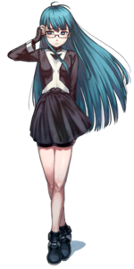

- Welcome to Touhou Wiki!
- Please register to edit. For assistance, check in with our Discord server or IRC channel.
C22

|
Attention: This article is a stub and it needs expanding with more information related to the article's topic. If you can add to it in any way, please do so. |
| C22 | |
|---|---|
|
 Illustration of C22, from the official website
| |
| Species | |
| Occupation |
Pilot |
Appearances | |
| Official Games | |
| |
- Note: This article is part of Project Blank by the Doujin circle RebRank.
C22 is, according to the data, a female humanoid made by the M.R.S who worked on developing the SDM series. She appears as the playable character of the main scenario of Samidare.
General Information[edit]
It's hard for people to notice that she isn't human unless not only judged by her physical appearance.
Machinery[edit]
C22 pilots the SMD-24-OX "五月雨" (Samidare).
Character Basis[edit]
Name[edit]
<add here>
Design[edit]
In C22's official art, she has long, cyan hair, grey eyes, and some rectangular glasses. She wears a tight ivoryblack uniform with long sleeves and white cuffs. She also wears a skirt over her tights, black fingerless gloves, and black shoes with an azure trim. In another illustration, she is shown with dark blue eyes.
Story[edit]
- Samidare
- Main article: Samidare Extra Story
She has to protect the humanity by going on dangerous missions in the SMD-24-OX, which includes a testing against the biomechanical construct Sylphid, an encounter with Anareta, the defense system of long-ruined space outpost Tetra-Biblos, and an encounter with the SMD series prototype, SMD-00x.
Gallery[edit]
Another illustration of C22 from the official website.
Official Profiles[edit]
| 戦闘兵器型端末SMDシリーズ SMD-24-OX 五月雨 SMD-24-OX 五月雨 戦闘兵器型端末とは、M.R.Sの情報収集用デバイスの一形態である。 型式番号 ：SMD-24-OX “五月雨” 大気圏内外両用、万能戦闘機の2号型4番機。 Type2-4の最も特筆すべき点それは乗員1名が搭乗するという部分にある。 これは判断・操縦系統に人間という生物が使われているにすぎない。 |
| 生体ユニット C22 五月雨の操縦ユニットとして産み出された存在である。
これは五月雨落下地点から十数キロの場所に居住する医師からの情報である。 近年、地表面に落下した隕石とおぼしき物質がこの“五月雨”である可能性が高い。 |
Official Sources[edit]
<toggledisplay showtext="Show sources" hidetext="Hide sources">
</toggledisplay>